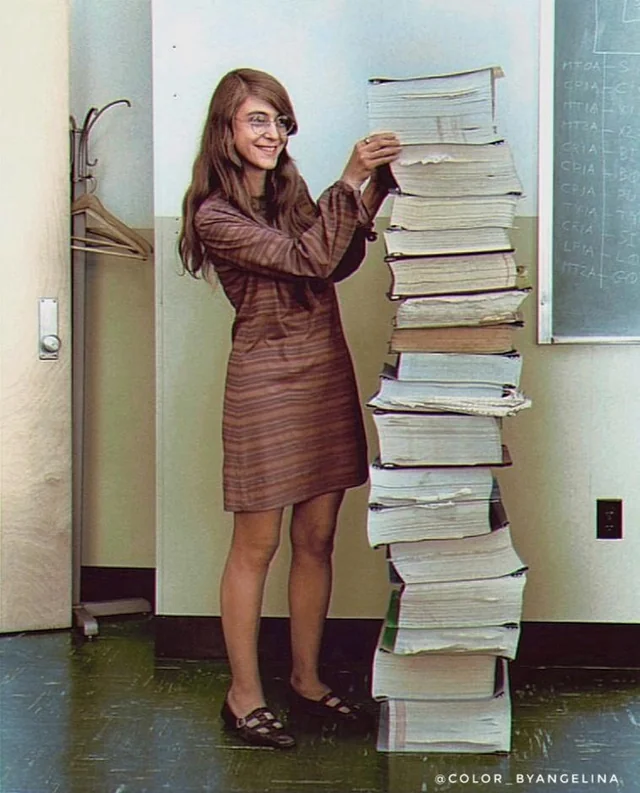

Margaret Hamilton is an American computer scientist and software
engineer. She led the team who developed the software for the Apollo
moon missions and for the Skylab space station in the 1960s and 70s.
It was her code that helped get us to the moon… and back!The picture
above shows us how hard it was for Hamilton to write the code,because
all those books next to her is her code.If she had access to todays
technologies it would've been easier to write the code. This also
shows advancement of computers.

Apart from that,some people didn't support. She said calling herself a software engineer people found it amusing but she didn't give up.The Apollo 11 mission was about to be aborted but she saved it from failing with her code.She also won a medal. If not for Margaret Hamilton this rocket wouldn't have reached the moon.
28th March 2024